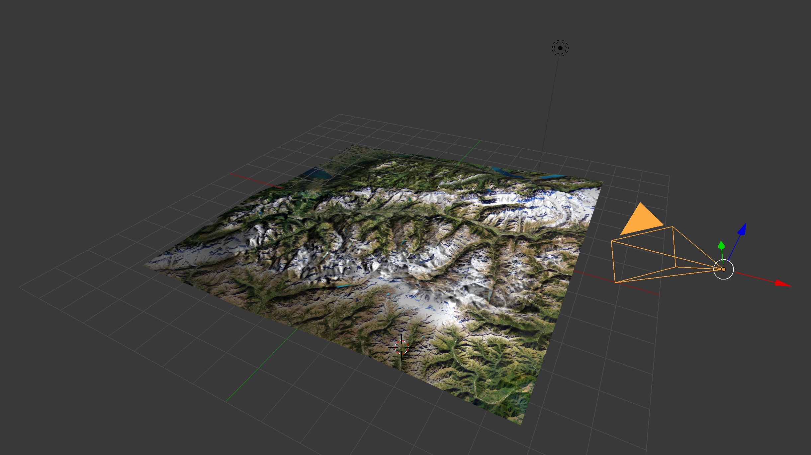

| Name: | Richard |
| Age: | 62 |
| Occupation: | Retired (he was Engineer and mountain lover) |
| Quote: | VR could allow me climbing mountains like when I was young :) |
| About: | Richard worked as electronic engineer for a big company. He traveled a lot during its holidays and during its trips, he climbed on a lot of mountains around the world. Nowadays, ha can't climb anymore. |
| VR Experience Level: | No VR experience. |

The first think to do is to build the mesh of the Swiss Alps.
Swiss Government provides a 3D points cloud of the whole country (Swiss Topo).
The points cloud must be converted to a mesh (I tried few apps like CloudCompare, MeshLab and Blender. I finally used Blender).
The useless points outside the Alps area are removed.
The second step is to map the texture on the mesh (This took me a lot of time because it was the first time I used Blender app).

Next, the mesh and its texture are exported from Blender and imported into Unity.
Pinpoints are placed on the top of interesting mountains (I used Google Map to locate the position of the mountains as precisely as possible.).
Wayspoints are positionned to allow the visitor reaching all interesting mountains.
Last step is to code all the glue :
The first test is related to the pinpoint that shows a mountain place.
The goal of this test is to gather information about the visibility and the understanding of the concept of pinpoint.
The first impression if the tester was Ouhahou ! It's amazing !
The pinpoints are too big comparing to the map and the mountains. They mask some mountains.
| Question | Answer |
|---|---|
| How big you think you are in this experience ? | I feel far from the mountains. The mountains appears small. |
| Can you describe the mood / atmosphere ? | I feel like a bird. |
| Is there anything that you’d like to look at but that’s difficult to see ? | The name of the mountain appears a little blurry. It should be centered according to the green pinpoint. |
| Tell me about your experience ? | It was a great immersive experience. |
| Did you enjoy the experience (yes / no) ? | Yes |
The tester liked it. He had a flying bird impression (this remarks gave me the idea to add a flying bird song).
The tester said he has the impression of "falling down" when he navigates near the borders of the map.
| Question | Answer |
|---|---|
| Do you see a panel in front of you ? | Yes, I understand I'm at the museum. |
| What do you think the panel is for ? | It presents three buttons. I can change the altitude of the waypoints. |
| Question | Answer |
|---|---|
| How did you feel about the speed of the movementy (too slow, too fast) ? | Some are slow, some are fast (I explained the travel time is the same between two waypoints). |
| Did you feel sick or uncomfortable ? | No. Except near the boarders of the scene. |
| Did you notice any sort of height changes or anything disorienting in the movement ? | No, but in some cases, I flew through the waypoint (This is due to the waypoint redisplay when the reticle is out of the collider). |
| Question | Answer |
|---|---|
| Did you like the audio and visual feedback ? | Yes, the wind sound and the flying bird sound are nice. But one more time, I didn't like the borders of the map. |
I'd like to build a more precise mesh using more points.
The purpose is to provide many more mountains with a very high resolution texture. Maybe many textures should be used. One by mesh part.
Visitor experience could be improved by letting it navigate freely.
Waypoints will be removed and replaced by a navigation system that requires specific hardware like hand controllers.
The skybox should be reviewed to avoid the sharp borders. This will avoid the visitor remark Ha ! I'm going to fall....
The WebView is not good. Maybe I should consider a commercial WebView. I could also check if the last Unity version provides a WebView.
Night at the Museum VR project was ambishious.
It was interesting because I played few other roles than VR Developer.
It was also challenging because of the next points.
I'm not fully statified by the result. Navigation is not perfect. I thing the visitor should fly instead of moving by waypoints.
Anyway, I enjoyed designing and implementing this project.